Torna alla pagina di Elaborazione delle Immagini
:: Appello d'esame di Elaborazione delle Immagini - 11/07/2007 ::
Esercizio 1
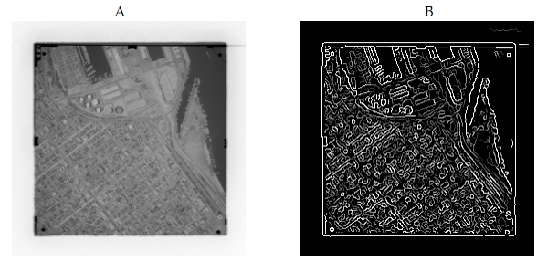
L’immagine rappresentata in A è ripresa dal satellite. Si vorrebbero individuare le strade della zona approssimativamente quadrata ripresa. Utilizzando un comune “edge detector” come quello di Canny si ottiene la figura B di cui tuttavia è difficile individuare le strade presenti. Proporre:
a) un metodo per estrarre le strade dall’immagine
b) Indicare qualitativamente il procedimento e commentarne pro e contro.
SOLUZIONE
1- Un metodo per individuare ed estrarre le strade dall'immagine considerata è quello di applicare la trasformata di Hough per le rette, nell'ipotesi che le strade considerate nella figura siano rette.
2- L'immagine ottenuta applicando la trasformata di Hough è la seguente:
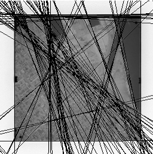
da cui sono evidenti le direzioni stradali trovate.
Il vantaggio è che riusciamo ad individuare le strade (in linea retta) senza alcuna conoscenza a priori sull'immagine.
Lo svantaggio è che questa trasformata non funziona per le linee curve, quindi non rileva le strade curve, ma solo i rettilinei.
La trasformata di Hough permette di individuare le linee rette passando dal piano xy, dove si trovano i punti che passano per le rette, al piano ab dove abbiamo che tutte le rette che si incontrano nello stesso punto di intersezione (a', b') corrispondo ai punti sulla stessa retta nel piano xy.
Bisogna poi passare al piano ρθ dove ogni curva sinusoidale rappresenta l'insieme delle linee che passano per un particolare punto nel piano xy. Il punto di intersezione di queste curve corrisponde alla retta che passa per i punti individuati nel piano xy.
Esercizio 2
Data l'immagine rappresentata in fig.1, calcolarne:
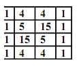
- La codifica LZW in uscita dal codificatore (dizionario contenente 32 parole)
- La decodifica LZW
- La codifica di Huffman
- Calcolare i due rapporti di compressione
SOLUZIONE
1- La codifica LZW è la seguente:
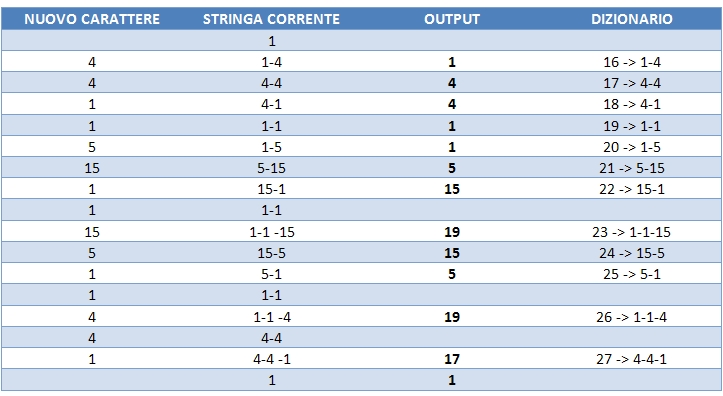
quindi con la codifica LZW avremo come output: 1, 4, 4, 1, 1, 5, 15, 19, 15, 5, 19, 17, 1.
buttiamo fuori 13 simboli da 5 bit (in quanto utilizziamo un dizionario da 32 parole).
2-
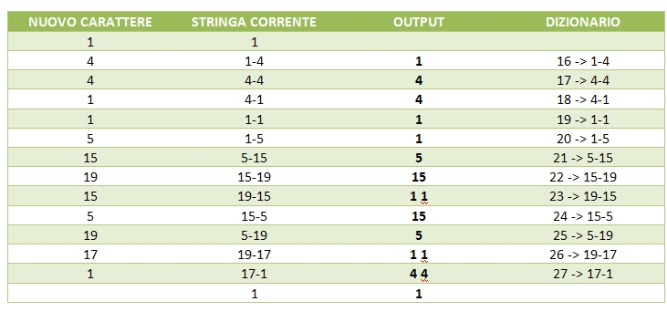
L'output corrisponde all'immagine originale.
3- La codifica di Huffman invece è la seguente:
Le probabilità dei livelli di intensità sono:
a1 1 p(1) = 8/16 = 0.5
a2 4 p(4) = 4/16 = 0.25
a3 5 p(5) = 2/16 = 0.125
a4 15 p(15) = 2/16 = 0.125
Il primo passo della codifica è rappresentato in tabella:
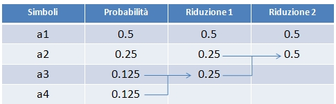
Il secondo passo invece:
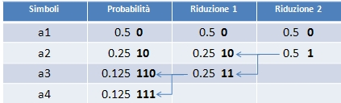
Quindi con Huffman avremo come output:
a1: 0; a2: 10; a3: 110; a4: 111.
4-
Codifica LZW:
Il rapporto di compressione è dato dal rapporto b/b, dove b è il file originale e b' il file compresso.
La dimensione del file originale è data da: M*N*L, dove M e N sono le dimensioni dell'immagine, mentre L è il numero di bit utilizzato per rappresentare ciascun pixel, in questo caso 4 nel file originale e 5 nel file compresso (utilizzando un dizionario da 32 parole).
C = 4*4*4 / 4*4*5 = 64/80 = 0.8
Codifica Huffman:
in questo caso viene utilizzato un diverso numero di bit per i vari valori di intensità, quindi per calcolare il valore di L dobbiamo utilizzare la seguente formula:
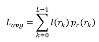
dove l è il numero di bit richiesti per rappresentare il dato valore di intensità e pr la probabilità dell'intensità.
(nel caso della codifica LZW utilizzavamo 5 perché era il numero fisso con cui venivano rappresentate le intensità dell'immagine).
L = (0.5*1) + (0.25*2) + (0.125*3) + (0.125*3) = 1.75
Il rapporto di compressione in questo caso diventa:
C = 4*4*4 / 4*4*1.75 = 64/28 = 2.28
Esercizio 3
Spiegare che cosa si intende per “Filtraggio Omomorfo” (Homomorphic Filtering) di una immagine e quali sono le sue possibili applicazioni.
SOLUZIONE
Il filtraggio omomorfico è un filtraggio che opera nel dominio della frequenza e quindi utilizza la Trasformata di Fourier. Questo tipo di filtraggio si basa sui concetti dell'illuminazione e della riflettanza per andare a migliorare l'aspetto dell'immagine effettuando operazioni di compressione dei range dell'intensità e miglioramento del contrasto.
Ciò è possibile perché un'immagine può essere espressa come prodotto delle componenti di illuminazione i(x,y) e riflettanza r(x,y):
f(x,y) = i(x,y)r(x,y)
questa equazione non può essere utilizzata direttamente nel dominio della frequenza perché la trasformata di Fourier di un prodotto non è uguale al prodotto delle trasformate (come emerge dal teorema della convoluzione). Per poter operare nella frequenza è necessario separare le componenti di illuminazione e riflettanza, in modo tale che il filtro possa operare separatamente sulle due componenti; il risultato finale di output sarà dato da:
io(x,y) = ei'(x,y)
ro(x,y) = er'(x,y)
Il concetto fondamentale legato a questo tipo di filtraggio è che nel dominio spaziale la componente di illuminazione è caratterizzata da lente variazioni spaziali, mentre la componente di riflettanza tende a variare bruscamente soprattutto nei punti di separazione di oggetti differenti. Questo avviene perché solitamente l'illuminazione in una scena è abbastanza costante e se varia lo fa gradualmente e dipende dalla fonte di luce, mentre la riflettanza è la quantità di luce riflessa da un oggetto quindi dipende dalla natura stessa dell'oggetto e può variare bruscamente da un oggetto ad un altro. Queste caratteristiche portano ad associare le basse frequenze della trasformata di Fourier con l'illuminazione e le alte frequenze con la riflettanza.
Quindi per ottenere una compressione del range dinamico e un miglioramento del contrasto bisogna amplificare gli effetti dovuti alle alte frequenze(riflettanza) e attenuare gli effetti dovuti alle basse frequenze(illuminazione).
Esercizio 4
Data l’immagine della fig. 2:
- Filtrarla con il filtro rappresentato nella fig. 3.
- Di che filtro si tratta?
- Cosa si ottiene filtrando l’immagine?
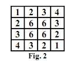
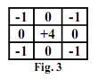
SOLUZIONE
1- filtrando l'immagine otteniamo:
-2 0 3 10
0 11 10 3
3 10 11 0
10 3 0 -2
2- è un filtro che non abbiamo mai visto, sembra essere un filtro laplaciano (anche se non compare mai in questa forma sul libro e in rete) che considera soltanto le direzioni diagonali; solitamente i -1 sono posizionati sulle direzioni verticale e orizzontale.
3- se è davvero un laplaciano lo utilizziamo per effettuare dello sharpening, evidenziando le zone di discontinuità e lasciando in secondo piano le zone ad intensità costante.
Se non è un laplaciano, non ne ho idea.
Esercizio 5
Data l’immagine in figura,
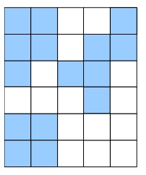
(in cui il quadrato colorato corrisponde ad un valore ad 1)
- si calcoli il numero di regioni connesse sia con vicinato a 4 che con vicinato a 8 pixel.
- dato l’elemento strutturante
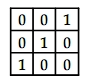
si calcoli il risultato dell’erosione dell’immagine (si supponga che il contorno dell’immagine sia posto a 0).
SOLUZIONE
1-
Regioni con vicinato a 4: nessuna (sulle slide dice 3, ma è follia perché sarebbe anche assurdo che ci siano più regioni con vicinato a quattro, che regioni con vicinato a otto)
Regioni con vicinato a 8: 2
Per dare un pochino di teoria ricordiamo che l'intorno di un pixel può essere in due formati:
- 4-intorno (N4): quando consideriamo i quattro pixel orizzontali e verticali, vicini al pixel p di coordinate (x,y); dove ciascun pixel si trova ad una distanza unitaria da (x,y).
- 8-intorno (N8): quando consideriamo i vicini orizzontali, verticali e diagonali.
Se R è un sottoinsieme di pixel in un'immagine, allora R viene detto Regione se è un insieme connesso, cioè se all'interno ha un'unica componente connessa.
2- Applicando l'erosione rimane soltanto un quadratino:
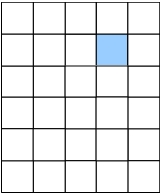
Ricordiamo infatti che nell'operazione di erosione l'elemento strutturante deve essere completamente contenuto nell'oggetto e nel nostro caso c'è soltanto un punto in cui l'elemento connesso riesce a stare completamente all'interno dei quadrati azzurri.
Torna alla pagina di Elaborazione delle Immagini